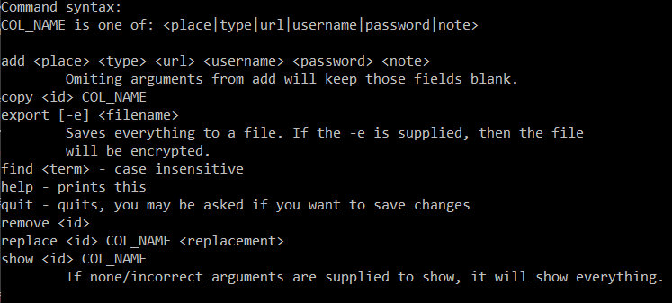
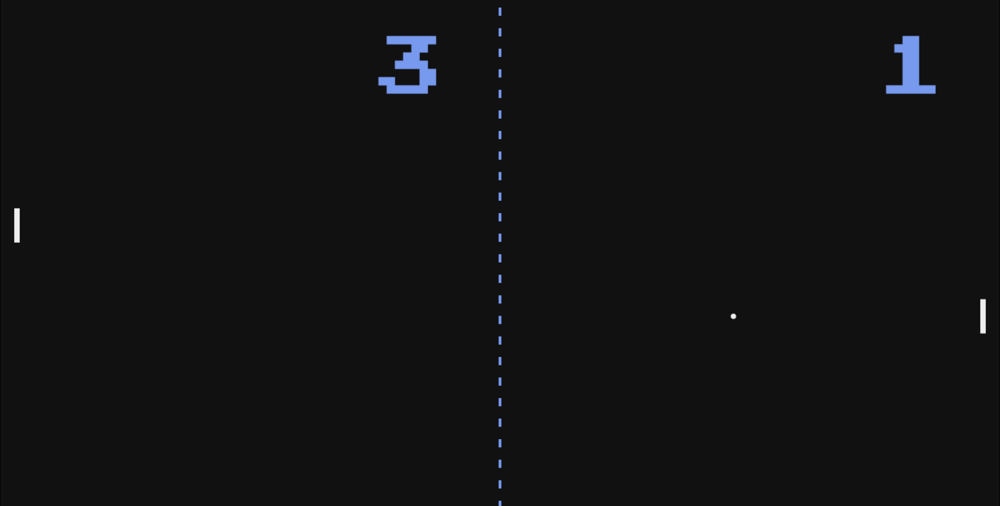
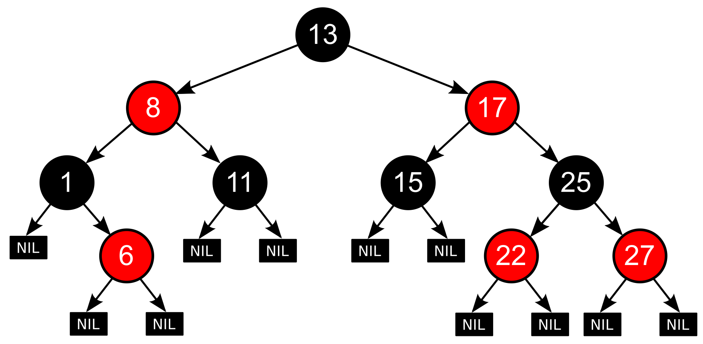
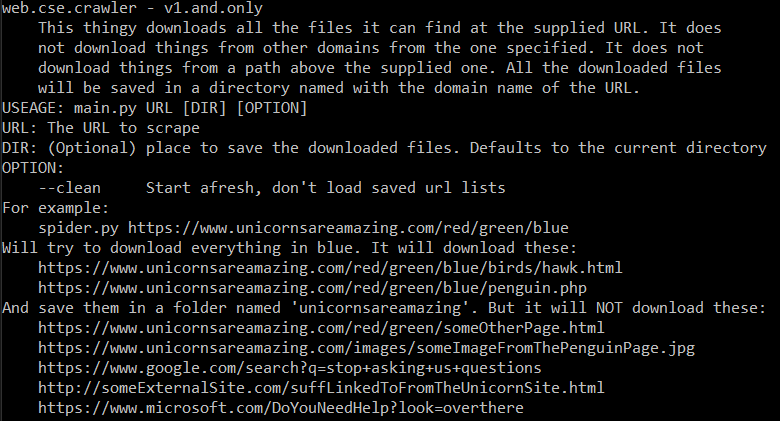
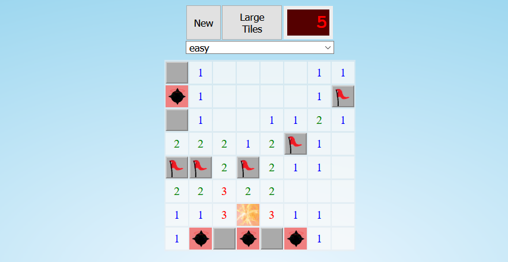
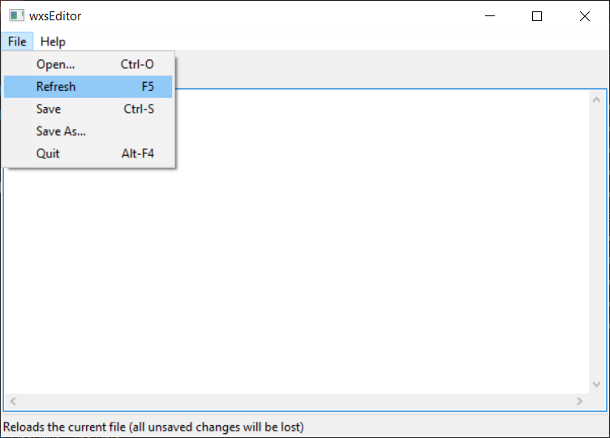

Projects
I've tried to describe my projects here in a way that someone who may not
be 100% familiar with the topic could still somewhat understand most of them.
They are listed in rough chronological order, with the most recent at the top.
Untitled_Roguelike - A game I made with five other people for my senior project.
I made all the levels and the dragon enemy, minus the sounds. I'm good at fixing problems so
I also helped my teammates fix bugs a lot. We made the game with the Unity engine & C#.
We plan to polish the game for a bit longer, and then release it on itch.io.
Mood Tracker (
Demo |
Source)
- A web app I made for a friend who wanted a way to
record her mood and other medical things. I made it using PHP, MySQL, JavaScript,
jQuery, Bootstrap, Chart.js, &
libsodium.
I recently switched hosting services and haven't got around to setting up the SQL
component again. I doubt I'll ever take the time to.

PwdAwMan (
Source)
- Woefully unsecure password manager. I made it more for the experience
than for serious use. I was in a Minecraft mood when I made it, hence the name.
Written in Java with the Java Simplified Encryption library.

Pong (
Play |
Source)
- Pong clone made using JavaScript.

rbtree (
Source)
- A sorted data structure based on red-black-tree algorithmns.
This type of data structure re-organizes itself when an item
is added to it. This makes it very fast to check if an element
is in the data structure. Written in Rust. Image from
Wikipedia.

SimpleSpider (
Source)
- Similar to
wget
but way less developed. It downloads copies of websites, with the option
to only retrieve a secific portiion of the site. Written in Python.

Mines (
Play |
Source)
- Minesweeper clone made using JavaScript.
BackupSchool (
Source)
- Backup program made to automatically copy new/modified files in specified
folders to a flash drive. Made with the
wxWidgits
GUI framework & C++.

wxsEditor (
Source)
- A text editor. Backstory: the IDE
I was using at the time,
Code::Blocks,
had a built-in GUI builder. The builder saved the GUI designs in an XML file
with a .wxs extension. The builder was a bit limited in what you could
do with it. I found that I could edit the XML in the WXS file and create
a more customized UI. I found myself going back and forth between the IDE and a
text editor. So I made this, a text editor with a button to reload the
currently open file & a file filter for opening WXS files. Not something
I use today, but I was happy with the final result when I finished it.
Built using wxWidgits, & C++. Fun fact,
one of the Code::Blocks devs starred this on GitHub.
Funnies
smh my head, you expected to find funny things here? You will be disappointed.
if null, then don't crash
x = 1
while True:
print("To infinity and beyond! We're getting close, on ", x, " now!")
x += 1
- stolen from the Python Wiki
Hyper Text Coffee Pot Control Protocol (HTCPCP/1.0)
#define true false
#define while while(1);while
try {
doThing();
} catch (Exception e) {
throw new Exception(e.Message);
}